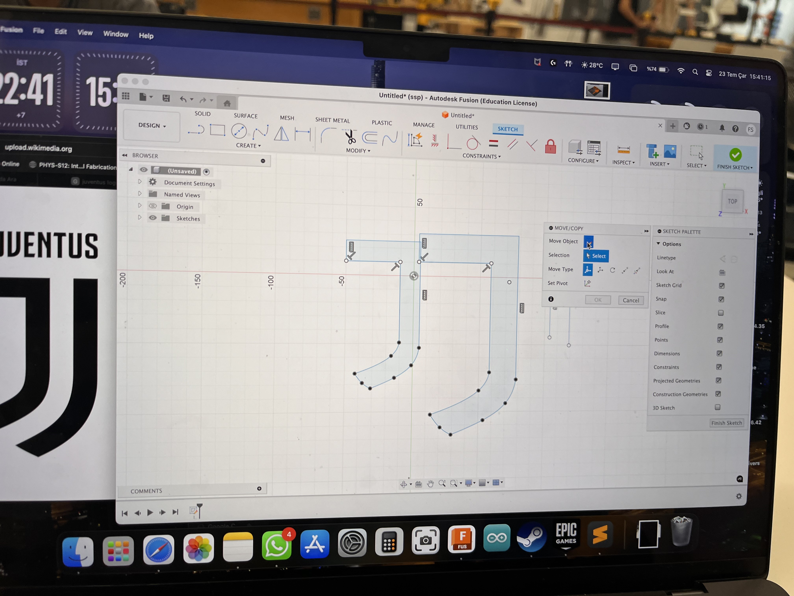
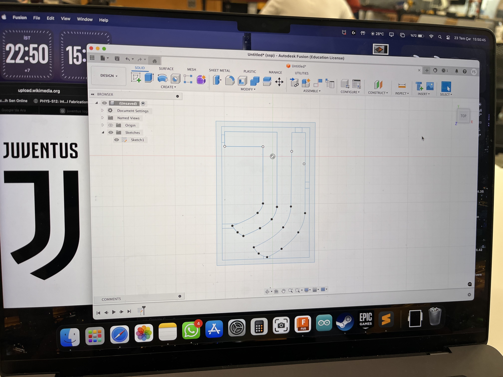
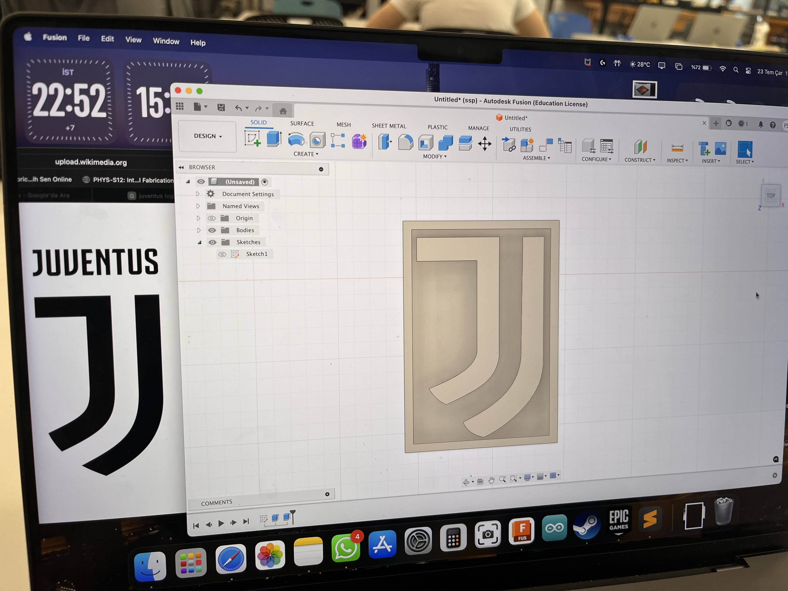

<div class="textcontainer">
<p class="margin"> </p>
<h3>Week 8: CNC Milling</h3>
<h4>Assignment: Make Something With CNC</h4>
<div style="background-color: white; padding: 20px; border-radius: 10px; box-shadow: 0 0 10px rgba(0,0,0,0.1); max-width: 800px;">
<p>
For this assignment, I worked with my classmate Fatih. Together, we created a logo of a famous Italian soccer club, Juventus FC and printed it out using ShopBot (2D outlines) / the Shaper (2D outlines) / the SRM-20 (2.5D molds).
<p> Screen before applying the code: </p>
<h4>1. Step 1 - Creating a design with fusion </h4>
<p>
We searched up the logo on Google, and used it as a reference to create a design in fusion.
</p>
<p> Sketch on Fusion: </p>
<p> Below is our designs on fusion: </p>

<p> --------------------------------------------------------------------------------- </p>

<p> --------------------------------------------------------------------------------- </p>

<p> --------------------------------------------------------------------------------- </p>
<h4> Step 2 - Using Shopboat to cut out the design </h4>
<p>
After finishing our design in Fusion, we imported it to a USB port and saved the file in a DXF format. Then, we measured the thickness of the wood (18.6 mm thickness), put nails on top of it to let the object stay in place, and cut the design out (Thank you Bobby and our fellow classmate Mehmet for help!)
</p>
<p> Below is our design after fully being printed out: </p>
<img src="sketchfusionjuventus.jpeg" style="max-width: 400px; border: 1px solid #ccc;">
<h4> Step 3 - Coating the product </h4>
</div>